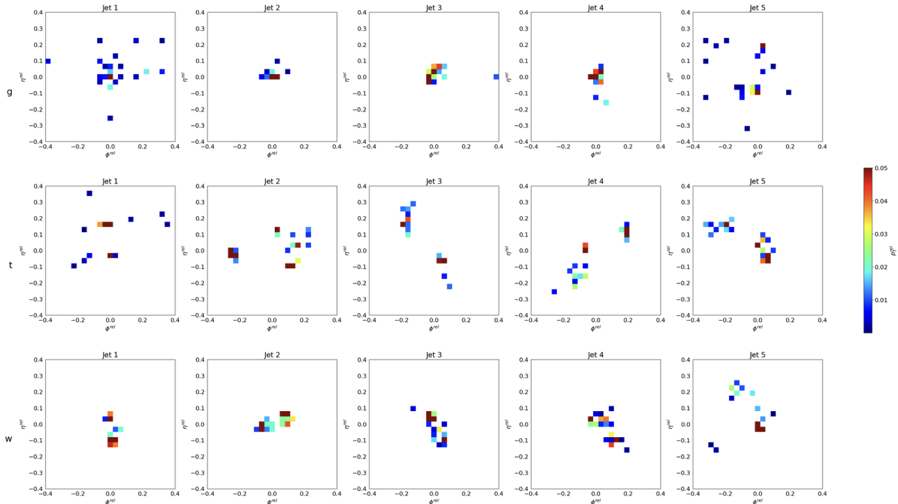
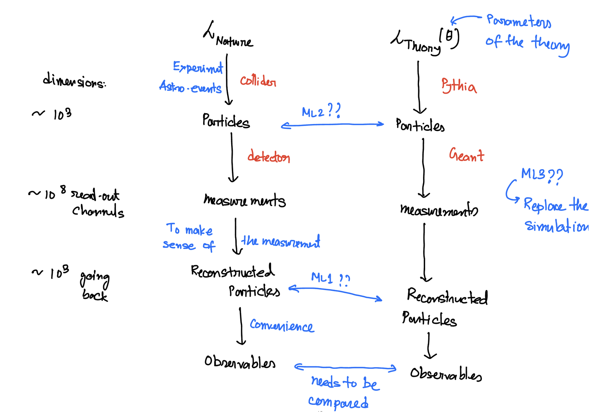

ML for HEP#
Through all the other course of this workshop, you are already familiar with the scale of data that physicists have to handle.On top of that, even to know that the full experiment is going smoothly, one have to basically look at thousands of histograms per minute to draw any conclusion. ML would be helpful in both minimising the human effort, quick data mining as well as hidden feature extractions as well.
Because of these huge amount of data, any full scale demonstration of ML model in HEP is not possible. One should remember that as of now the goal of ML in physics is not to replace the physics simulation but to aid it. Imagine how easy would it be if one can automate Data Quality Monitoring (DQM) through ML to get some burden away from the shifters. The goal is always to help, but not to replace physics. Any ML algorithm that might help particle physics, should itself obey the laws of physics, albeit in some obscure way.
For example jet-data can be transformed as images. Now the question is, if there is any pattern to it or not. This images are produced from JetNet dataset, which is synthetically simulated jet data. You can try and analyze the images to tag which jets are from what particle

The goal of particle physics is to understand the nature, towards that we can use ML in several possible places

Towards that our asignment would be to do Higgs classification.
Background: High-energy collisions at the Large Hadron Collider (LHC) produce particles that interact with particle detectors. One important task is to classify different types of collisions based on their physics content, allowing physicists to find patterns in the data and to potentially unravel new discoveries.
Problem statement: The discovery of the Higgs boson by CMS and ATLAS Collaborations was announced at CERN in 2012. In this work, we focus on the potential of Machine Learning and Deep Learning in detecting potential Higgs signal from one of the background processes that mimics it.
Dataset: The dataset is made available by the Center for Machine Learning and Intelligent Systems at University of California, Irvine. The dataset can be found on the UCI Machine learning Repository
Description: The dataset consists of a total of 11 million labeled samples of Higgs vs background events produced by Monte Carlo simulations. Each sample consists of 28 features. The first 21 features are kinematic properties measured at the level of the detectors. The last seven are functions of the first 21.
Steps to load the training dataset
Download the dataset from the UCI website.
!wget https://archive.ics.uci.edu/ml/machine-learning-databases/00280/HIGGS.csv.gz
Unzip the folder
!gzip -d HIGGS.csv.gz
Load libraries
from sklearn.datasets import make_gaussian_quantiles
from sklearn.ensemble import AdaBoostClassifier
from sklearn.metrics import accuracy_score
from sklearn.tree import DecisionTreeClassifier
from sklearn.metrics import confusion_matrix
from sklearn.model_selection import train_test_split
import pandas as pd
import numpy as np
import numpy as np
np.random.seed(1337) # for reproducibility
import h5py
from keras.models import Sequential
from keras.optimizers import Adam
from keras.initializers import TruncatedNormal
from keras.layers import Input, Dense, Dropout, Flatten, Conv2D, MaxPooling2D
from keras.callbacks import ReduceLROnPlateau
from sklearn.metrics import roc_curve, auc
import matplotlib.pyplot as plt
Load the file using pandas library
data=pd.read_csv('./HIGGS.csv', header=None)
## print the first 5 rows
data.head()
The first column is the class label (1 for signal, 0 for background), followed by the 28 features (21 low-level features then 7 high-level features): lepton pT, lepton eta, lepton phi, missing energy magnitude, missing energy phi, jet 1 pt, jet 1 eta, jet 1 phi, jet 1 b-tag, jet 2 pt, jet 2 eta, jet 2 phi, jet 2 b-tag, jet 3 pt, jet 3 eta, jet 3 phi, jet 3 b-tag, jet 4 pt, jet 4 eta, jet 4 phi, jet 4 b-tag, m_jj, m_jjj, m_lv, m_jlv, m_bb, m_wbb, m_wwbb
## change the column numbers to column names
data.columns = ['target',
'lep_pT',
'lep_eta',
'lep_phi',
'missE',
'missphi',
'jet1_pt',
'jet1_eta',
'jet_1_phi',
'jet_1_b_tag',
'jet_2_pt',
'jet_2_eta',
'jet_2_phi',
'jet_2_b_tag',
'jet_3_pt',
'jet_3_eta',
'jet_3_phi',
'jet_3_b_tag',
'jet_4_pt',
'jet_4_eta',
'jet_4_phi',
'jet_4_b_tag',
'm_jj',
'm_jjj',
'm_lv',
'm_jlv',
'm_bb',
'm_wbb',
'm_wwbb']
## print the first 5 rows (including the column names)
data.head()
Assign first column 0 to class labels (labeled 1 for signal, 0 for background) and all others to feature matrix X.
In this example, for the sake of fast checking, we use 1000 samples. To train on the entire dataset, proceed with uncommenting the lines below.
X=data.iloc[:1000,1:]#data.iloc[:,1:]
y=data.iloc[:1000,0]#data.iloc[:,0]
X_train1, X_val, y_train1, y_val = train_test_split(X, y, test_size=0.2, random_state=42)
X_train, X_test, y_train, y_test = train_test_split(X_train1, y_train1, test_size=0.2, random_state=42)
Visualize your data - One histogram per feature column
Detailed information on what each feature column is can be found in Attribute Information section on the UCI Machine learning Repositery. For further information, refer to the paper by Baldi et. al
from itertools import combinations
import matplotlib.pyplot as plt
fig, axes = plt.subplots(len(X_train.columns)//3, 3, figsize=(12, 48))
i = 0
for triaxis in axes:
for axis in triaxis:
X_train.hist(column = X_train.columns[i], bins = 100, ax=axis)
i = i+1
** Proceed with Decision tree and ML **
The answers will be given here afterwards
{kind=link}